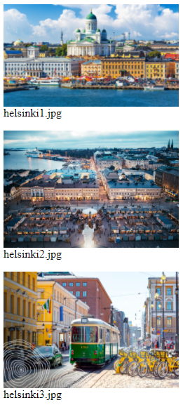

Tee lomake jolla voidaan syöttää seuraavat tiedot:
Pakollisia (required) kenttiä ovat nimi, käyttäjätunnus, salasana ja sähköposti.
Tee lomakkeelle PHP:lla lomakkeenkäsittelijä jossa tarkistat syötteen ja tulostat sen sivulla näkyviin käyttäjälle. Käsittele kaikki syöte htmlspecialchars()-funktion kautta.
Salasanan tulee olla pituudeltaan vähintään kuusi merkkiä ja sen tulee sisältää jokin luku. Jos salasana ei ole kunnollinen niin näytä käyttäjälle lomake ja varoitusviesti ("Syötä monimutkaisempi salasana.").
Tutki miten tiedoston kirjoittaminen tapahtuu. Kokeile tehdä esimerkin kaltainen lomake jolla voit kirjoittaa php/temp -kansioon txt-tiedoston.
Tutki miten tedoston lataaminen palvelimelle tapahtuu. Laadi lomake jonka avulla voidaan siirtää php/temp-kansioon jokin kuvatiedosto (png, jpg).
Tee PHP-sivu joka näyttää kansiossa php/temp olevat kuvat.

Suunnittele palautelomake jolla voidaan pyytää kotisivun kävilöiltä palautetta. Mieti mitä kenttiä palautelomakkeella voisi olla. Kun käyttäjä lähettää lomakkeen Lähetä palaute-painikkeella niin uusi palaute tallennetaan CSV-tiedostoon uudelle riville. CSV-tiedostossa jokainen kenttä on erotettu erotinmerkillä, käytä erotinmerkkinä ";".
PHP:ssa on näppärä fuktio fputcsv jolla voit luoda helposti CSV-tiedoston. Avaa tiedosto nyt Append-muodossa jotta uusi palaute ei tuhoa vanhoja tietoja.